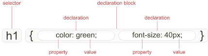

Main Page
Main Page  ICT
ICT  AP
AP A. Browser Output
What to use in CSS
- Curly braces { }
- Colons :
- Semi Colons ;
- Selectors
- Declarations
CSS structure
- Selectors - Select the html element you want to style.
- Property - The style attribute, or specific aspect on how the html element will be presented that you want to modify.
- Value - The weight of the attribute you want to apply to the html element.
- Declaration - It is a single instruction that defines a specific style for the element. It is composed of the property and value.
- Declaration block - It is a block of code that contains one or more declarations.
Style sheet and its parts
- The style sheet is the set of instructions to the browser on how to display various elements.
- Every CSS is a series of instructions called statements. Statements identify the elements it wants to affect and how to draw these elements.
- Style sheets are just text files, or text embedded in the head of an HTML document, that help separate content from appearance.
Things to remember when using CSS
- The type attribute should always be <style type=“text/css”>
- They used to put CSS within html comment tags to hide it from old browsers that do not support CSS, but this is no longer needed.
Three kinds of CSS
- External/linked style sheets - Placed outside the html document. It is the most global of the 3 kinds of CSS since you can apply it to multiple webpages. It is done through the link tag, placed in the head of the html document. You can easily change the style of the website by editing the external style sheet. It has a .CSS file extension.
- Internal/Embedded style sheets - Used to creat a document-wide style rule. It is placed within the head tag of the webpage, using the style tag, which is done when you have a webpage you want to display differently from others. It override external style sheets.
- Inline style sheets - Used for isolated changes, and stored directly in the style attributes of the html elements. It override external and internal.
CSS comments
These are ignored by the browsers, and used for notifications, reminders, and explanations that help increase code readability. It starts with /* and ends with */
B. What I have Learned
In this lesson, I learned about the basics of CSS. I learned about what style sheets are, and also its different parts. I also learned what we use in CSS, and also the different types of CSS, which includes external/linked, internal/embedded, and inline.